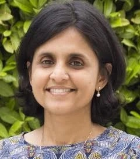

Anandi Mani
Professor of Behavioural Economics and Public Policy
Blavatnik School of Government, University of Oxford
Anandi Mani is Professor of Behavioural Economics and Public Policy at the Blavatnik School of Government. Her research interests are in the area of Development Economics, with a specific focus on issues related to the behavioral economics of poverty and social exclusion, gender issues and public good provision. She is a Research Affiliate at Ideas42, a think tank for Behavioral Economics at Harvard University, a Fellow at the centre for Comparative Advantage in the Global Economy (CAGE) at the University of Warwick and a Member of the Institute of Advanced Study at Princeton. Her recent work has been published in prominent economics journals and has also featured in leading newspapers including the New York Times, the Guardian and the BBC. Prof. Mani was a program participant at the World Economic Forum 2017 in Davos and a member of the Forum's Global Council on the Future of Behavioral Sciences.